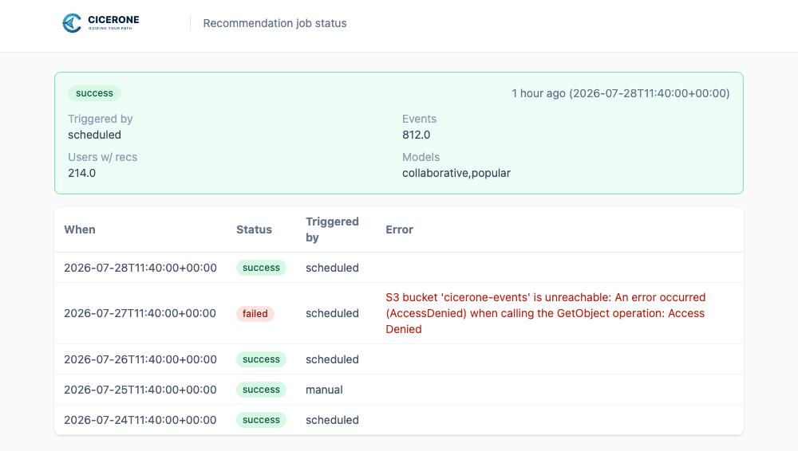

Quick start
Build the test image, write a tiny local dataset, point config/cicerone.toml at it, and run the job once:
docker build --target test -t cicerone-test -f docker/Dockerfile .
mkdir -p data/input data/output
# generate sample parquet under data/input/ — see the full tutorial
docker compose run --rm recommenderServe API
Set [job].mode = "serve" to expose a read-only FastAPI over precomputed recommendations (no LightFM/rectools in the request path):
| Method | Path | Description |
|---|---|---|
GET | /health | Liveness (no auth) |
GET | /recommendations/{user_id} | Top-K for a user |
GET | /docs · /redoc | Interactive OpenAPI |
GET | /metrics | Prometheus text format |
Auth is a bearer token from [serve].auth_token (${ENV_VAR} placeholder — never a literal secret in TOML). Query params: limit, category, exclude_unavailable.
from cicerone.serve_client import ServeClient
client = ServeClient("http://localhost:8000", token="…")
print(client.recommendations("alice", limit=5, category="beer"))Checked-in schema: docs/openapi/serve.openapi.json. Language samples live under examples/serve/.
Dashboard
A standalone container on port 8090 shows the latest run status, counts, models, and (with DB output) short history. Protected with HTTP Basic Auth.

[dashboard].enabled = true; manage users via python -m cicerone.manage_dashboard_users.Configuration
One TOML file drives structural settings and ${ENV_VAR} secrets; feature weights and policies live in config/features.toml.
config/cicerone.toml— job mode, I/O, cron, model, serve, trigger, dashboardconfig/cicerone.serve.toml— standalone serve exampleconfig/cicerone.dashboard.toml— standalone dashboard exampleconfig/features.toml— event weights, eligibility, boosts
Further reading
- Architecture overview (this site)
- README — full feature reference
- Tutorial — zero to full local run
- Architecture (repo) — module map
- Contributing — Docker CI, lint, coverage gate